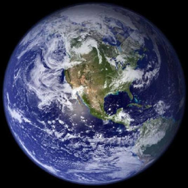

| Faza curentă a Lunii |
Când ultimul copac va muri, când ultimul râu va fi otrăvit și ultimul pește va fi prins,
vom înțelege că nu putem mânca bani. --proverb Cree-- Planeta Albastră |
| Home | Introducere | Poluarea aerului | Poluarea apelor | Poluarea solului | Combaterea poluării |
|

Acest site a fost creat fiindcă planeta noastră este pe moarte şi noi avem puterea de a o salva; este un strigăt de revoltă împotriva nepăsării şi ignoranţei oamenilor. Planeta noastră are 4,6 miliarde de ani, cu 3,8 miliarde de ani în urmă a apărut ADN-ul, acesta a fost începutul vieţii pe Terra; dinozaurii au stăpânit planeta timp de 160 milioane de ani şi au dispărut în urma unui cataclism natural acum 65 milioane de ani. Cea mai veche fosilă a unui hominid (Sahelanthropus tchadensis) are 7 milioane de ani, Homo Sapiens apărând abia acum 195 mii de ani. Noi am cauzat extincţia a mii de specii de animale şi plante, am epuizat multe din resursele naturale ale acestei planete în doar câteva sute de ani. Se zice că ceea ce distruge un idiot, 100 de înţelepţi nu pot repara. Revoluţia industrială şi tehnologia nu au făcut decât să distrugă, nu putem decât să sperăm că tehnologia din ce în ce mai avansată va reuşi să salveze ce a mai rămas şi chiar să repare stricăciunile provocate până acum de noi. Acea sferă albastră care de fapt nu e sferă ci "elipsoid de rotaţie" pe care totuşi o numesc sferă şi care este imperfectă ca orice altceva din univers şi chiar universul însuşi este imperfect, acea sferă albastră este pe moarte şi e numai vina noastră de data asta. În trecut vina a fost a asteroizilor sau a erupţiilor vulcanice. De la distanţa de la care a fost facută fotografia, nu se vede absolut nimic suspect, nici măcar nu s-ar bănui că există fiinţe inteligente pe "planeta albastră". Şi totuşi, acele fiinţe bipede şi "inteligente" care se numesc în limbajul ştiinţific "Homo Sapiens" (în traducere - omul cugetător sau omul înţelept) au reuşit să asculte porunca divină şi să se înmulţească şi să umple toată planeta, astfel începând procesul de distrugere al ei şi arătând că nu îşi merită denumirea fiindcă nu sunt câtuşi de puţin înţelepţi. Cât de înţeleaptă este o specie care îşi taie creanga de sub picioare? În continuare vom vedea cum funcţionează poluarea. Planeta Albastră site creat de Stefan URL: http://www.planeta.albastra.go.ro/index.html |